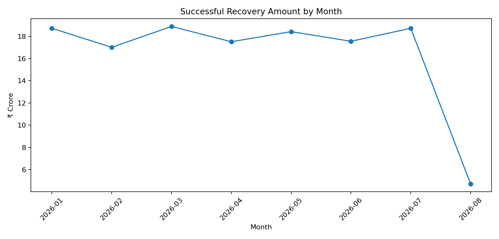

| Month | Successful events | Recovered amount | MoM | Recovery / principal proxy |
|---|---|---|---|---|
| 2026-01 | 2,464 | ₹187,229,128 | nan% | 1.55% |
| 2026-02 | 2,268 | ₹170,142,454 | -9.13% | 1.41% |
| 2026-03 | 2,524 | ₹188,912,374 | 11.03% | 1.56% |
| 2026-04 | 2,406 | ₹175,138,043 | -7.29% | 1.45% |
| 2026-05 | 2,449 | ₹184,250,278 | 5.20% | 1.52% |
| 2026-06 | 2,366 | ₹175,559,727 | -4.72% | 1.45% |
| 2026-07 | 2,441 | ₹187,242,265 | 6.65% | 1.55% |
| 2026-08 | 616 | ₹47,109,695 | -74.84% | 0.39% |
| Issue | Dataset | Test | Impact | Severity |
|---|---|---|---|---|
| Borrower duplicates | borrowers | Duplicate borrower_id groups | 8,566 | High |
| Borrower exact duplicates | borrowers | Exact duplicate rows | 600 | Medium |
| Accounts missing borrower_id | accounts | NULL borrower_id | 455 | High |
| Payment duplicate IDs | payments | Duplicate payment_id groups | 500 | High |
| Payment excess rows | payments | Rows removed by payment_id dedupe | 500 | High |
| Payment exact duplicates | payments | Exact duplicate rows | 486 | Medium |
| Call duplicate IDs | calls | Duplicate call_id groups | 1,350 | High |
| Call exact duplicates | calls | Exact duplicate rows | 1,271 | Medium |
| Call agent missing | calls | NULL agent_id | 1,827 | Medium |
| Borrower phone missing | borrowers | NULL phone | 614 | Low |
| Borrower email missing | borrowers | NULL email | 895 | Low |
| PTP dates beyond data window | promises_to_pay | promised_date after 2026-08-08 | 1,242 | Medium |
| Field scheduled_at missing | field_visits | NULL scheduled_at | 250 | Low |
| WhatsApp exact duplicates | whatsapp_events | Exact duplicate rows | 600 | Medium |
| Agent identity conflicts | agents | agent_id with >1 employee/vendor/name/team | 1,000 | Critical |
| Disposition versions | call_dispositions | Multiple disposition versions present | 3 | High |
| Mixed timezones in calls | calls | Calls with timezone differing from vendor master | 60,028 | High |
| Campaign definitions | campaigns | Campaign rows | 120 | High |
| Partial month | payments | August data ends Aug 8 | 8 | High |
Metric caveat: Monthly historical outstanding balance is not present, so the dashboard uses total principal as a stable exposure proxy. This must be replaced by an as-of-month outstanding snapshot in production.